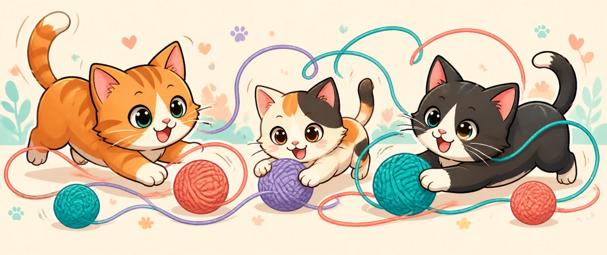

Async Rust. Fewer surprises.
Kittens turns the coordination rules you care about into compiler feedback—before a harmless edit becomes a race.
Meet kittens-codekittens-code
The coding agent that picks up where it left off.
Work survives restarts. Long conversations stay searchable. The default demo runs offline—no account, network, or hidden service.
cargo install kittens-code-cli --version 0.0.1

Make the important order explicit.
Kittens lets Rust reject selected coordination mistakes before they become production mysteries.
It checks the coordination you declare—not arbitrary Rust or the outside world.
Explore Kittens